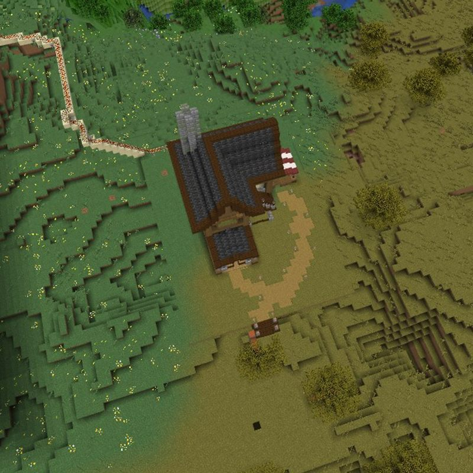
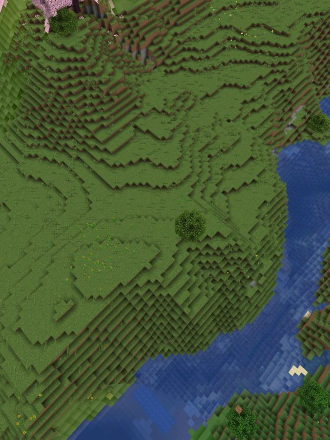
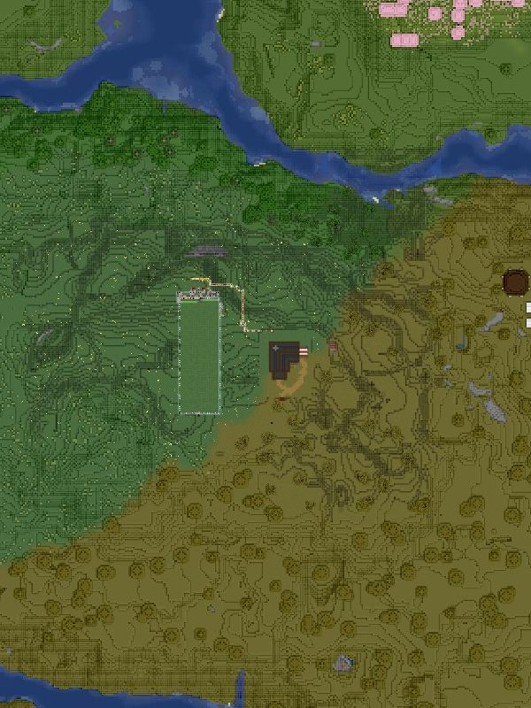
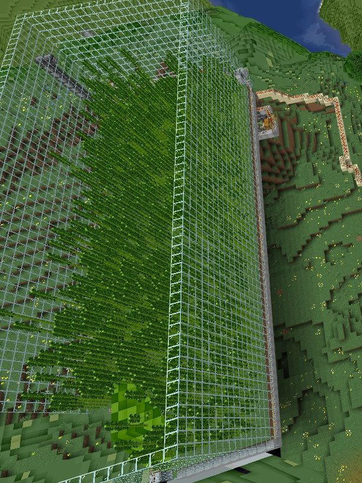
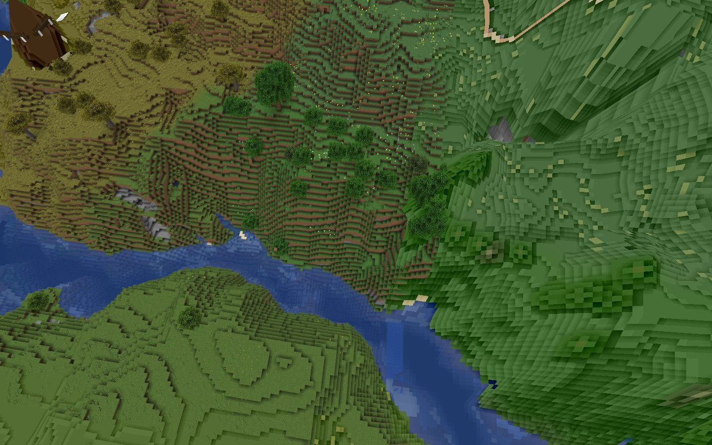

基本約定
- 不破壞別人的東西。包含建築、農場、紅石機器、告示牌。不確定是不是別人的，就當作是。
- 不拿別人的東西。沒上鎖的箱子不等於公共箱子。
- 尊重別人的空間。別人家附近不要亂蓋、不要挖洞、不要留怪洞。
- 不使用作弊工具。包含 X-Ray 材質包、飛行外掛、自動釣魚／自動點擊等巨集。
- 說話有分寸。不人身攻擊、不歧視、不洗版。玩笑話看對象。
帶人進來
這台伺服器是介紹制的，沒有公開招募。
- 要帶朋友進來，先跟我說一聲，我才能加白名單。
- 介紹人要先把這份規則給對方看過，不要讓人進來才慢慢摸索。
- 被帶進來的人如果出狀況，我們會先找介紹人一起處理。不是要連坐，是因為你比我們熟他。
- 如果你帶的人累積到被踢出，你的帶人資格會暫停，之後要帶人再討論。
白名單只有伺服器主能加。基岩版玩家用的是另一條指令（/fwhitelist），跟我說是哪個版本，不然會加錯。
建築與領地

新開一塊地之前，先看看附近有沒有人。
- 離別人的建築至少 100 格，除非對方同意。
- 主城區、出生點周邊由管理團隊維護，要在那裡蓋東西先問過。
- 不要用建築擋住別人的路、視野或鐵軌。
- 離開一個地方時把洞補起來，尤其是會掉下去的那種。
- 大規模地形改造（超過一個區塊範圍）先講一聲。
生電與效能
這是整份規則裡最會真的影響到你的部分。伺服器跑在家用機器上，配置 8–10 GB 記憶體，真正的瓶頸不是記憶體，而是每個遊戲刻的運算時間（MSPT）。一台機器卡住，是所有人一起卡。
硬上限
| 項目 | 上限 | 說明 |
|---|---|---|
常載區塊（/forceload） | 每人 4 個區塊 | 要更多先討論。總量會定期用 /forceload query 盤點 |
| 單一農場的常駐實體 | 150 隻以內 | 刷怪塔、動物場、村民交易所都算 |
| 單一欄位的動物 | 20 隻以內 | 超過請分散，或用隊伍設定 collisionRule never |
| 村民交易所 | 30 名村民以內 | 村民是最吃效能的實體之一 |
| 地上掉落物 | 離線前清空 | 不要讓掉落物整夜堆在地上 |
| 連續漏斗 | 單段 64 格以內 | 更長請分段並加開關 |
其他要求
- 所有紅石時鐘都要有關閉開關。沒有開關的無限循環一律要求改掉。
- 刷怪塔必須有殺怪機制，不能只堆積不處理。
- 掛機刷怪請避開凌晨 4:00 前後，那是每日備份時段。
- 蓋大型機器之前說一聲，我們可以先看一下會不會爆。
- 如果發現 MSPT 異常，會用
/spark profiler找來源，然後來找你一起調整。不是要罵人，是要讓機器能繼續跑。
這組數字是依目前的硬體估的。真的有人蓋了大型農場之後，我們會看實際的 MSPT 數據再調整，上限只會往合理的方向改，不會突然收緊。
跨版本

這台伺服器同時開放 Java 版和基岩版（透過 Geyser）。
- 基岩版沒有副手鍵，要用
/geyser offhand把物品放到副手。 - 基岩版玩家的名稱前面會有一個
.，這是正常的，不是對方亂取名。 - 基岩版看不到部分 Java 專屬的視覺效果（畫面著色器、部分互動式訊息），設計給大家用的東西不要依賴這些。
- 紅石機器的行為兩邊完全一致，不用擔心。
- 基岩玩家遇到方塊顯示錯誤，通常是 Geyser 版本問題，回報給我們，不要自己亂拆。
聊天與 Discord
- 遊戲內聊天會同步到 Discord，Discord 那邊也看得到你說的話。
- Discord 的指令頻道權限由伺服器主控管，不要試圖繞過。
- 不要在公開場合貼伺服器的連線位址給不認識的人。
- 有問題直接在 Discord 問，不用等人上線。
回檔

每日備份，保留 7 天。東西被破壞或拿走，可以申請回檔，但有門檻：
| 條件 | 說明 |
|---|---|
| 48 小時內提報 | 超過兩天通常已經有人在那片地動過，回檔會連帶毀掉別人的進度 |
| 要給座標與大概時間 | 不然沒辦法定位要回哪一段 |
| 以區域為單位回檔 | 不是只回你的東西，整塊地會回到那個時間點 |
| 別人的進度優先 | 如果回檔會影響到其他人，會先問過他們 |
| 原則上每人每月一次 | 超過的話我們談談是不是哪裡出了結構性問題 |
回檔只有伺服器主能執行。管理員可以協助確認狀況、調閱紀錄，但不會自己動備份。
回檔是補救手段，不是保險。重要的東西請自己留備份箱、分散放。
違規處理
| 次數 | 處理 | 誰能執行 |
|---|---|---|
| 第 1 次 | 警告 | 伺服器主、管理員 |
| 第 2 次 | 警告 | 伺服器主、管理員 |
| 第 3 次 | 踢出伺服器 | 伺服器主、管理員 |
| 第 4 次 | 封鎖 | 伺服器主 |
封鎖之後要重新找伺服器主討論才有可能回來。不是永久不可逆，但也不是說回來就回來。
關於累積
- 警告是累積制，不會因為隔一陣子沒事就自動歸零。
- 每次警告會在管理頻道用文字明確記下「日期／玩家／事由／第幾次」，不會只是口頭唸一下。
- 你可以隨時問自己目前累積幾次。
如果你覺得被誤判，直接說，我們會重看一次。最終判斷由伺服器主決定。
管理員

管理員是來分擔日常處理的，不是第二個擁有者。權限的切法是一個原則：
可逆的給管理員，不可逆的留給伺服器主。
管理員可以做的
| 項目 | 說明 |
|---|---|
| 警告、踢出 | 第 1 到第 3 階段 |
| 登記警告紀錄 | 在管理頻道寫下日期／玩家／事由／第幾次 |
| 創造模式 | 用於更改世界，限度見下方「創造模式」 |
| WorldEdit | 用於修補地形與清理，單次操作上限 100,000 方塊 |
| WorldGuard | 查看區域資訊、增減成員 |
| BlueMap | 觸發重新渲染（避開尖峰） |
| Geyser 診斷 | /geyser dump、/geyser list |
| 協助判斷回檔 | 確認狀況、調閱紀錄，但不執行 |
只有伺服器主能做的
| 項目 | 為什麼 |
|---|---|
| 封鎖玩家 | 第 4 階段，影響最大 |
| 回檔 | 會動到所有人的進度，不可逆 |
| 開關伺服器 | 看門狗每 5 分鐘會自動拉起來，兩邊同時操作會互相打架 |
| 白名單增減 | 進出的人由介紹制控管 |
| LuckPerms 權限調整 | 改權限等於改這份規則的執行基礎 |
| RCON／內網控制台 | 這是繞過所有遊戲內權限的通道，只留一份 |
| 改 server.properties、gamerule、記憶體配置 | 影響整台機器的行為 |
刪除 WorldGuard 區域、改 __global__ 旗標 | 一個指令可以讓全服農場停擺 |
創造模式
管理員可以開創造模式更改世界，在以下限度內。
不用問，直接做：
- 修復被破壞的公共設施、補地形上的洞
- 建設、整修主城與出生點等公共區域
- 清理廢棄建築、整地、處理殘留的怪洞
- 小範圍的景觀美化
要先問過：
| 情況 | 要問誰 |
|---|---|
| 動到任何玩家的私人建築或領地 | 該玩家本人 |
| 大規模地形改造（超過一個區塊群，約 48×48） | 伺服器主 |
| 新增任何會常駐運作的東西（常載、自動機器） | 伺服器主 |
| 改動主城的整體規劃，不只是修補 | 伺服器主 |
不能做：
- 不能用創造建造會產出資源的設施——農場、刷怪塔、熔爐陣、自動合成機。蓋好送人等於印資源，生存的意義會直接消失。
- 不能把創造取得的物品放進生存物品欄、箱子，或轉給玩家。方塊放進世界裡是修繕，放進箱子裡是發錢。
- 不能拿違禁物品（清單見下）。
- 不能用創造幫玩家「補償」物品——那是回檔的工作。補償比回檔方便太多，開了這個口子就不會有人走回檔流程了。
每次都要做：
- 進創造前在管理頻道留一行：要做什麼、在哪裡。
- 做完切回生存。
留紀錄不是不信任，是為了保護管理員自己。之後有人質疑「他是不是開創造拿東西」，紀錄就是答案；沒紀錄的話，就算清白也講不清楚。
違禁物品
以下物品任何人都不得持有，管理員在創造模式下也一樣。在世界中發現一律回收。
| 類別 | 物品 |
|---|---|
| 指令類 | 指令方塊、連鎖指令方塊、重複指令方塊、指令方塊礦車、結構方塊、拼圖方塊、除錯棒 |
| 不可生存取得的方塊 | 基岩、屏障、光源方塊、結構空位、終界傳送門框架 |
| 生成類 | 生怪磚、試煉生怪磚、所有刷怪蛋 |
| 超規物品 | 附魔等級超過原版上限、unbreakable、帶自訂組件的物品 |
| 其他 | 知識書、創造模式專屬的測試用物品 |
例外：建設公共設施確實需要屏障或光源方塊時（例如隱藏的碰撞邊界、不想放火把的照明），跟伺服器主說一聲再放。放進世界裡可以，留在物品欄裡不行。
管理員自己違規
管理員適用同一套警告制度，由伺服器主執行。另外：
- 濫用權限（用創造拿物品、無理由踢人、亂改別人建築）直接解除管理員身分。
- 解除之後以一般玩家身分留下，警告紀錄保留。
意見不同時
管理員可以提出看法，但最終決定權在伺服器主。不要在公開頻道互相推翻對方的判斷——先私下講，對外講一致的結論。
我們會做的事

規則是雙向的，以下是管理團隊的承諾：
- 每天備份，保留 7 天。
- 伺服器掛掉會自動重啟（看門狗每 5 分鐘檢查一次）。
- 重啟前會提前 5 分鐘廣播。
- 重大更新（換版本、改規則）會先在 Discord 公告。
- 處罰前會把理由講清楚，不會無聲執行。
- 效能上限如果要調整，會先說明原因。
看完了進來吧
回到首頁複製連線位址。有任何疑問，直接在 Discord 問。
拿連線位址